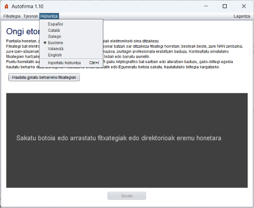
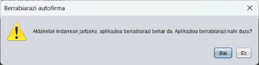
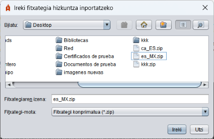

Autofirmaren pantaila nagusian, aplikazioaren hizkuntza alda daiteke, goiko aldean dagoen "Hizkuntza" menuaren bidez. Gaztelaniaz, ingelesez, katalanez, galegoz, euskaraz eta valentzieraz erabil daitezke.

Hautatutakoan, Autofirma berrabiarazteko eskatuko zaio erabiltzaileari, aldaketak behar bezala aplikatzeko.

Autofirmak aukera ematen dio erabiltzaileari hizkuntza bat inportatzeko haren baliabideak dituen .zip fitxategi baten bidez. Aukera hau "Hizkuntza" menuko "Inportatu hizkuntza" aukera hautatuz erabil daiteke.
